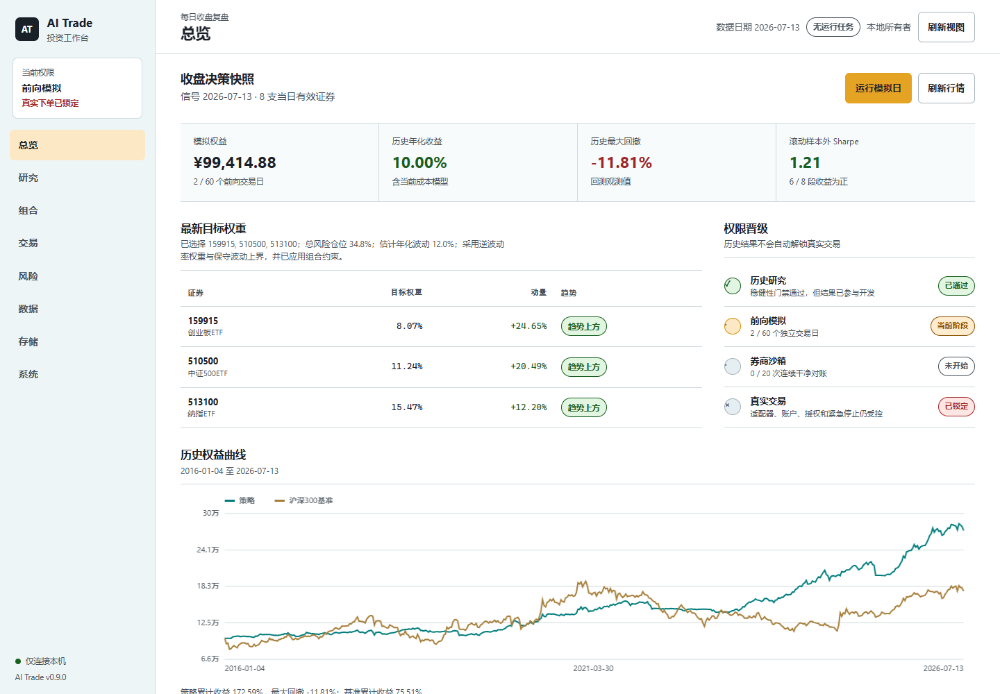

系统化研究
ETF 动态标的池、趋势与相对强弱、组合约束、滚动样本外验证，以及可审计的 HTML、CSV、JSON 和 Markdown 报告。
公开发行版 v1.0.0
把行情快照、策略验证、风险约束、模拟账户和研究证据放进同一个本地工作台。
为收盘后的严谨复盘而设计。每一个结论都能回到数据日期、配置、模型版本与不可变审计记录。

系统不靠一句“AI 建议”替代过程，而是把每个中间状态留下来供人检查。
主数据源、回退源与独立核对彼此标明。
多头、空头与裁判记录相互隔离。
成本、回撤、稳定性与基准一起呈现。
按交易规则记账，不用理想价格回填。
日报、周报与研究日志保留修订链。
ETF 动态标的池、趋势与相对强弱、组合约束、滚动样本外验证，以及可审计的 HTML、CSV、JSON 和 Markdown 报告。
日周月 K 线、技术指标、股票基本面与估值分位、官方披露、新闻、龙虎榜、市场宽度、板块资金流和 Level-1 五档盘口。
支持断档追赶的模拟账户、影子成交复盘、券商订单生命周期恢复，以及面向未来适配器的作用域与能力声明。
当前公开版用于研究和本地模拟，不提供投资建议、盈利承诺或可工作的真实券商适配器。历史收益不会自动提升任何交易权限。